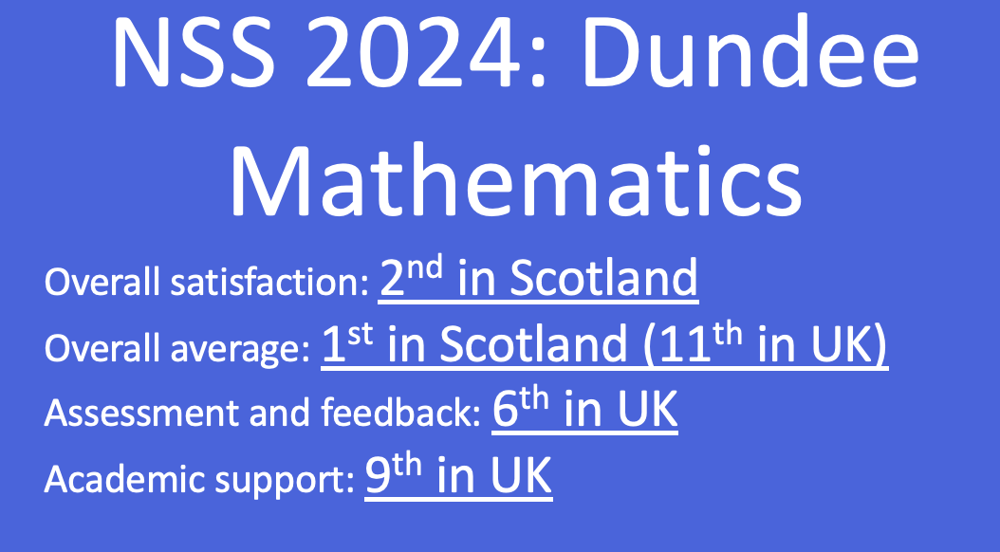
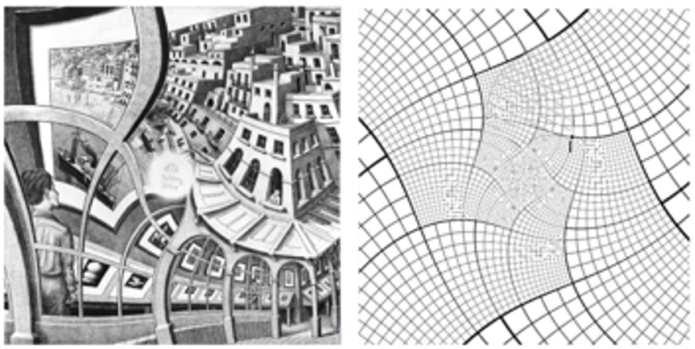
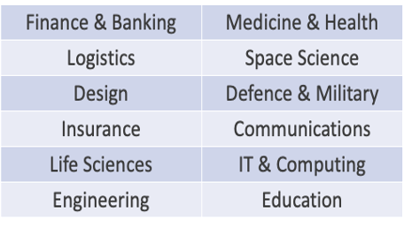

All the notes, one equation
Dr. Philip Murray
University of Dundee
2026-09-30
Why study mathematics?
Why Mathematics?
- route into many numerate professions
- diverse career opportunities
- learn a language that can be applied in many contexts
- well paid jobs
- learn skills for the digital age
- Because you enjoy it!
What happens on a Mathematics degree?
- Build from Higher/Advanced Higher Mathematics
- Learn how to apply mathematics to real world problems
- Develop programming skills needed to solve mathematical problems
- Develop communication skills

Learn to become a logical numerate problem solver
How is Mathematics taught at Uni?
develop core syllabus (e.g. algebra and calculus)
learn about new mathematical topics (e.g. statistics, dynamical systems, differential geometry, operational research …)
lectures (50 minute, twice a week)
weekly tutorials (usually associated with worksheets)
computer labs (develop programming skills)
Flex your mathematical muscles with a final year project
- develop independent problem solving skills
- develop programming and presentation skills
- The $25,000,000,000 eigenvector
- The mathematics of monopoly
- How sat. navs work?

Listen.
One of those notes is exactly four times higher than the other.
I could have told you that number before I ever touched the string.
Not a guess — a calculation.
Long before calculus existed
A blacksmith’s forge
Pythagoras, according to legend, noticed that hammers of different weights striking an anvil rang out notes that sounded good together — but only in certain simple ratios.
1636
Marin Mersenne, in Paris, carefully measuring strings by hand — and writing down the first correct laws linking a string’s length, tension and thickness to its pitch.
He got it right over a century before calculus existed to prove why.
A very heated argument
Three of the 18th century’s greatest mathematicians — d’Alembert, Euler, and Daniel Bernoulli — fell out for years over what a vibrating string’s motion actually is.
That argument is where our equation was born.
Joseph Fourier
Any sound at all — however messy, however many instruments playing at once — is secretly just a stack of pure, simple notes.
That single idea is why we’re about to take a real sound apart and see what’s inside it.
This is mathematics.
\[ f=\dfrac{n}{2L}\sqrt{\dfrac{T}{\mu}} \]
Pluck a string of length \(L\), under tension \(T\), with mass-per-length \(\mu\) — and it must ring out at this frequency.
Longer string
→ deeper note
Tighter string
→ higher note
Heavier string
→ deeper note
Everyone in this room already knows this from experience. The reveal is that it isn’t just a trend — it’s exact.
Let’s demonstrate it, live
Measure the string
- Length \(L\) — tape measure, live
- Tension \(T\) — from the tuning, or a hanging weight
- Mass per length \(\mu\) — from the string’s own spec
Real strings, real numbers
9-gauge acoustic set (D’Addario EJ23, phosphor bronze), tuned to DADGAD
| String | Note | Gauge | Type | μ (g/m) | T (N) |
|---|---|---|---|---|---|
| 6 | D2 (low D) | .045″ | wound | 7.18 | 65 |
| 5 | A2 | .035″ | wound | 4.40 | 89 |
| 4 | D3 | .025″ | wound | 2.26 | 82 |
| 3 | G3 | .015″ | plain | 0.89 | 57 |
| 2 | A3 | .012″ | plain | 0.57 | 46 |
| 1 | D4 (high D) | .009″ | plain | 0.32 | 46 |
25.5in (0.648m) scale length. Standard-tuning tensions from D’Addario’s published chart, retuned to DADGAD (tension scales with frequency squared at fixed length and mass). The two D strings, used in the simulation next, are the ones to watch.
Predict, before you pluck
Set the sliders to match your measured string, then read off the predicted frequency.
#| standalone: true
#| components: [viewer]
#| viewerHeight: 480
from shiny import App, ui, render, reactive
from shinywidgets import output_widget, render_widget
import numpy as np
import plotly.graph_objects as go
import matplotlib.pyplot as plt
app_ui = ui.page_fluid(
ui.tags.style("""
.sidebar .shiny-input-container { margin-bottom: 2px !important; }
.sidebar label.control-label { margin-bottom: 0px !important; font-size: 0.8em; line-height: 1.1; }
.sidebar .irs { margin-top: 0px !important; margin-bottom: 0px !important; }
.sidebar .irs--shiny .irs-min, .sidebar .irs--shiny .irs-max { top: -2px !important; }
.sidebar .row { margin-left: -4px !important; margin-right: -4px !important; }
.sidebar .row > div { padding-left: 4px !important; padding-right: 4px !important; }
"""),
ui.layout_sidebar(
ui.sidebar(
ui.input_slider(
"L",
"String Length L (m)",
min=0.30,
max=0.70,
value=0.65,
step=0.01,
),
ui.input_slider(
"T",
"Tension T (N)",
min=20,
max=100,
value=65,
step=1,
),
ui.input_slider(
"mu",
"Mass per length mu (g/m)",
min=0.20,
max=8,
value=7.18,
step=0.02,
),
ui.row(
ui.column(6,
ui.input_slider(
"n",
"Harmonic n",
min=1,
max=6,
value=1,
step=1,
),
),
ui.column(6,
ui.input_slider(
"time",
"Time (s)",
min=0.0,
max=2.0,
value=0.0,
step=0.01,
animate=True,
),
),
),
width=300,
),
ui.output_text("summary"),
ui.row(
ui.column(6, output_widget("wave_plot", height="260px")),
ui.column(6,
ui.output_plot("waveform_plot", height="100px"),
ui.output_plot("spectrum_plot", height="150px"),
),
),
),
)
def _envelope_fill(ax, t, x, n_bins=400, color="#4365E2"):
n = len(x)
bin_size = max(1, n // n_bins)
n_full = (n // bin_size) * bin_size
x_trim = x[:n_full].reshape(-1, bin_size)
t_trim = t[:n_full].reshape(-1, bin_size)
mins = x_trim.min(axis=1)
maxs = x_trim.max(axis=1)
t_bins = t_trim.mean(axis=1)
ax.fill_between(t_bins, mins, maxs, color=color, linewidth=0)
def server(input, output, session):
@reactive.calc
def wave_speed():
# mu entered in g/m on screen; convert to kg/m for the physics
return np.sqrt(input.T() / (input.mu() / 1000.0))
@reactive.calc
def frequency():
return input.n() * wave_speed() / (2 * input.L())
@output
@render.text
def summary():
return (
f"Predicted frequency: {frequency():.1f} Hz "
f"(wave speed: {wave_speed():.1f} m/s, harmonic n={input.n()})"
)
@output
@render_widget
def wave_plot():
L = input.L()
c = wave_speed()
t = input.time()
n = input.n()
x = np.linspace(0, L, 400)
y = np.sin(n * np.pi * x / L) * np.cos(n * np.pi * c * t / L)
fig = go.Figure()
fig.add_scatter(x=x, y=y, mode="lines", line=dict(width=3))
fig.update_layout(
height=260,
margin=dict(l=45, r=10, t=35, b=40),
title=f"String shape now (n={n})",
xaxis_title="Position (m)",
yaxis_title="Displacement",
yaxis=dict(range=[-1.3, 1.3]),
)
return fig
@output
@render.plot
def waveform_plot():
f = frequency()
dur = 6.0
sr = 4000
t = np.linspace(0, dur, int(dur * sr))
envelope = np.exp(-t / 3.0)
x = envelope * np.cos(2 * np.pi * f * t)
fig, ax = plt.subplots(figsize=(5, 1.0))
_envelope_fill(ax, t, x)
ax.set_xlim(0, dur)
ax.set_ylim(-1.05, 1.05)
ax.set_yticks([])
ax.set_xlabel("Time (s)")
ax.set_title("Predicted sound wave", fontsize=10)
ax.tick_params(labelsize=8)
fig.tight_layout()
return fig
@output
@render.plot
def spectrum_plot():
f = frequency()
f_max = max(1000, f * 1.15)
times = np.linspace(0, 6, 50)
freqs = np.linspace(0, f_max, 300)
T_grid, F_grid = np.meshgrid(times, freqs)
width = 6.0
power = 0.02 + 0.98 * np.exp(-0.5 * ((F_grid - f) / width) ** 2)
power_db = 10 * np.log10(power)
fig, ax = plt.subplots(figsize=(5, 1.5))
mesh = ax.pcolormesh(
times,
freqs,
power_db,
shading="gouraud",
)
ax.set_ylim(0, f_max)
ax.set_xlabel("Time (s)", fontsize=9)
ax.set_ylabel("Frequency (Hz)", fontsize=9)
ax.set_title("Predicted spectrogram", fontsize=10)
ax.tick_params(labelsize=8)
fig.colorbar(mesh, ax=ax, label="Power (dB)")
fig.tight_layout()
return fig
app = App(app_ui, server)Now let’s record the real thing
Press record, wait for the countdown, then pluck the string. Watch where the line lands.
#| standalone: true
#| components: [viewer]
#| viewerHeight: 580
#|
from shiny import App, ui, reactive, render
import numpy as np
import matplotlib.pyplot as plt
from scipy.signal import spectrogram
SAMPLE_RATE = 44100
RECORD_SECONDS = 10
MAX_SAMPLES = SAMPLE_RATE * RECORD_SECONDS
app_ui = ui.page_fluid(
ui.tags.head(
ui.tags.script(
f"""
let audioContext;
let microphone;
let processor;
let recording = false;
let busy = false;
async function beginCapture(stream) {{
audioContext =
new AudioContext();
microphone =
audioContext.createMediaStreamSource(stream);
processor =
audioContext.createScriptProcessor(
2048,
1,
1
);
microphone.connect(processor);
processor.connect(
audioContext.destination
);
recording = true;
console.log("Recording started");
const startTime = Date.now();
processor.onaudioprocess = function(e) {{
if (!recording) {{
return;
}}
const input =
e.inputBuffer.getChannelData(0);
const arr = Array.from(input);
Shiny.setInputValue(
"audio_chunk",
arr,
{{priority: "event"}}
);
const elapsed =
(Date.now() - startTime) / 1000;
Shiny.setInputValue(
"recording_time",
elapsed,
{{priority: "event"}}
);
if (elapsed >= {RECORD_SECONDS}) {{
recording = false;
busy = false;
processor.disconnect();
microphone.disconnect();
stream.getTracks().forEach(
track => track.stop()
);
console.log("Recording finished");
Shiny.setInputValue(
"recording_done",
Math.random(),
{{priority: "event"}}
);
const btn =
document.getElementById("start");
if (btn) {{
btn.disabled = false;
}}
}}
}};
}}
function runCountdown(seconds, cd, onDone) {{
let remaining = seconds;
cd.textContent =
"Get ready... " + remaining;
const timer = setInterval(function() {{
remaining -= 1;
if (remaining > 0) {{
cd.textContent =
"Get ready... " + remaining;
}} else {{
clearInterval(timer);
cd.textContent = "";
onDone();
}}
}}, 1000);
}}
document.addEventListener(
"DOMContentLoaded",
function() {{
const btn =
document.getElementById("start");
const cd =
document.getElementById("countdown_display");
btn.onclick = async function() {{
if (busy) {{
return;
}}
busy = true;
btn.disabled = true;
try {{
const stream =
await navigator.mediaDevices.getUserMedia({{
audio: {{
echoCancellation: false,
noiseSuppression: false,
autoGainControl: false
}}
}});
runCountdown(
3,
cd,
function() {{
beginCapture(stream);
}}
);
}} catch(err) {{
busy = false;
btn.disabled = false;
console.error(err);
alert(
"Microphone error: " + err
);
}}
}};
}}
);
"""
),
),
ui.layout_sidebar(
ui.sidebar(
ui.input_action_button(
"start",
"Record (10 seconds)"
),
ui.tags.div(
id="countdown_display",
style=(
"font-weight:600; color:#4365E2; "
"margin: 4px 0; min-height: 1.2em; "
"font-size: 0.95em;"
),
),
ui.output_text("status"),
ui.input_slider(
"freq_lim",
"Frequency (Hz)",
min=50,
max=4000,
value=[50, 400],
step=20,
),
width=260,
),
ui.output_plot("waveform_plot", height="110px"),
ui.output_plot("spectrogram_plot", height="260px"),
),
)
def _envelope_fill(ax, t, x, n_bins=800, color="#4365E2"):
n = len(x)
bin_size = max(1, n // n_bins)
n_full = (n // bin_size) * bin_size
x_trim = x[:n_full].reshape(-1, bin_size)
t_trim = t[:n_full].reshape(-1, bin_size)
mins = x_trim.min(axis=1)
maxs = x_trim.max(axis=1)
t_bins = t_trim.mean(axis=1)
ax.fill_between(t_bins, mins, maxs, color=color, linewidth=0)
def server(input, output, session):
recorded_audio = reactive.value(
np.array([], dtype=np.float32)
)
recording_complete = reactive.value(False)
@reactive.effect
@reactive.event(input.start)
def _():
recorded_audio.set(
np.array([], dtype=np.float32)
)
recording_complete.set(False)
@reactive.effect
@reactive.event(input.audio_chunk)
def _():
if recording_complete.get():
return
chunk = np.array(
input.audio_chunk(),
dtype=np.float32
)
current = recorded_audio.get()
updated = np.concatenate([
current,
chunk
])
updated = updated[:MAX_SAMPLES]
recorded_audio.set(updated)
@reactive.effect
@reactive.event(input.recording_done)
def _():
recording_complete.set(True)
@output
@render.text
def status():
if recording_complete.get():
seconds = (
len(recorded_audio.get())
/ SAMPLE_RATE
)
return (
f"Recording complete.\n"
f"{seconds:.1f} seconds captured."
)
try:
rt = input.recording_time()
except Exception:
rt = None
if rt is None:
return (
"Press Record to begin."
)
return (
f"Recording... "
f"{rt:.1f} sec"
)
@output
@render.plot
def waveform_plot():
if not recording_complete.get():
fig, ax = plt.subplots(figsize=(10, 1.1))
ax.text(
0.5,
0.5,
"No recording yet",
ha="center",
va="center",
)
ax.axis("off")
return fig
audio = recorded_audio.get()
t = np.arange(len(audio)) / SAMPLE_RATE
fig, ax = plt.subplots(figsize=(10, 1.1))
_envelope_fill(ax, t, audio)
ax.set_xlim(0, RECORD_SECONDS)
ax.set_yticks([])
ax.set_xlabel("Time (s)")
ax.set_title("Recorded sound wave")
return fig
@output
@render.plot
def spectrogram_plot():
if not recording_complete.get():
fig, ax = plt.subplots(figsize=(10, 2.6))
ax.text(
0.5,
0.5,
"No recording yet",
ha="center",
va="center",
)
ax.axis("off")
return fig
audio = recorded_audio.get()
window = 1024
noverlap = 512
freqs, times, Sxx = spectrogram(
audio,
fs=SAMPLE_RATE,
nperseg=window,
noverlap=noverlap,
)
Sxx_db = 10 * np.log10(
Sxx + 1e-10
)
fig, ax = plt.subplots(
figsize=(10, 2.6)
)
mesh = ax.pcolormesh(
times,
freqs,
Sxx_db,
shading="gouraud",
)
ax.set_ylim(
input.freq_lim()[0],
input.freq_lim()[1]
)
ax.set_xlabel("Time (s)")
ax.set_ylabel("Frequency (Hz)")
ax.set_title(
"Spectrogram"
)
fig.colorbar(
mesh,
ax=ax,
label="Power (dB)"
)
return fig
app = App(app_ui, server)Your turn
Move the fret. Change the tuning peg.
Predict what happens to the note — out loud — before you check.
Why this is a maths degree, not a party trick
This equation has cousins.
The same shape of equation describes heat flowing through metal, the wavefunctions of quantum mechanics, and why bridges — and eardrums — vibrate the way they do.
Fourier is running on your phone, right now.
The same idea behind that spectrogram is how Shazam recognises a song in ten seconds, how MP3s compress music, and how an MRI scanner builds a picture from radio waves.
Those harmonics — \(n=1,2,3\dots\) — are the only shapes the string is allowed to vibrate in.
Almost the same idea reappears, barely changed, in quantum mechanics.
Change the ends, change the notes.
It’s because the string is pinned at both ends that only whole-number harmonics are allowed at all. Change the boundary, and you change the whole allowed spectrum.
This kind of thinking is what a maths degree trains — and it’s valued.
Guess first.
Finger vote — 1, 2, or 3. What do you think last year’s Dundee maths graduates mostly became?
1. Mostly bankers and accountants
2. Mostly teachers
3. A genuine mix — barely any two the same
What have recent Dundee graduates gone on to do?
- Actuaries
- Accountants
- Data analysts
- Engineers
- Trade analysts
- App. developers
- Teachers
- Academia
- Programmers
Logical numerate problem solvers are valued

www.ima.org
Why I find this compelling
Pluck the string one more time.
That sound is \(f=\dfrac{n}{2L}\sqrt{\dfrac{T}{\mu}}\).
An equation, played out loud.
Questions?
Dr Philip Murray · pmurray@dundee.ac.uk
Appendix: where the formula comes from
1. Newton’s second law on a small piece of string (tension \(T\), mass per length \(\mu\)) gives the wave equation — curvature \(\propto\) acceleration: \[\frac{\partial^2 u}{\partial t^2}=c^2\frac{\partial^2 u}{\partial x^2}, \qquad c=\sqrt{\dfrac{T}{\mu}}.\]
2. Any sinusoid \(u(x,t)=\sin(kx)\cos(\omega t)\) solves this, for any \(k\), provided \(\omega = ck\) — that’s just what the wave equation means.
3. Pinned at both ends: \(u(0,t)=0\) is automatic; \(u(L,t)=0\) forces \(\sin(kL)=0\), so \(kL=n\pi\), \(n=1,2,3,\dots\) — only certain wavelengths fit.
4. Combine \(k=n\pi/L\) with \(\omega=ck\): since \(f=\omega/2\pi\), \[f=\frac{n}{2L}\sqrt{\frac{T}{\mu}}.\]